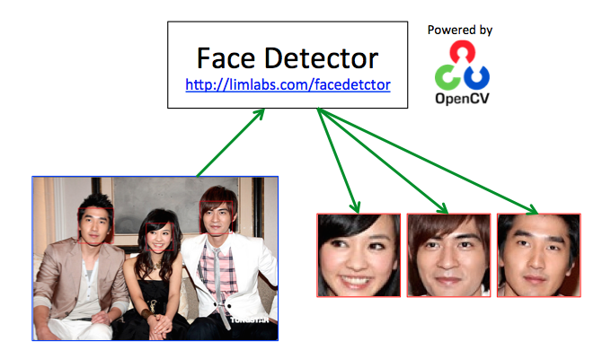
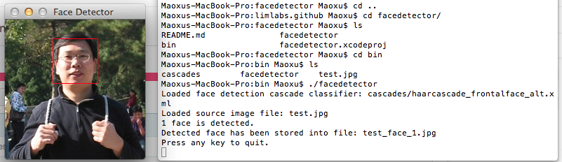

lim (artisan) = artist
This program demonstrated the technologies of face deteciton with OpenCV. A HAAR cascade classifier is used to detect faces in a input image. The detected faces are marked with rectanglar boxes and stored into separate files. Based on this work, face recognition can be done with Eigenfaces, Fisherfaces, or Local Binary Patterns Histograms (LBPH) algorithms.

Please find a complete copy of source code at https://github.com/limlabs/facedetector. Below is a screenshot of the demo program.

We can create readable, maintainable, scalable, testable, documented, and flexible code. Please contact us at team@limlabs.com for software development or consulting service.